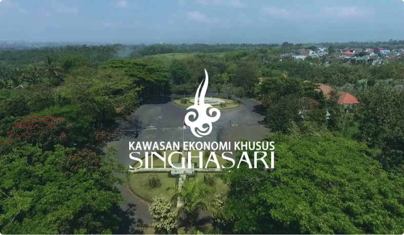
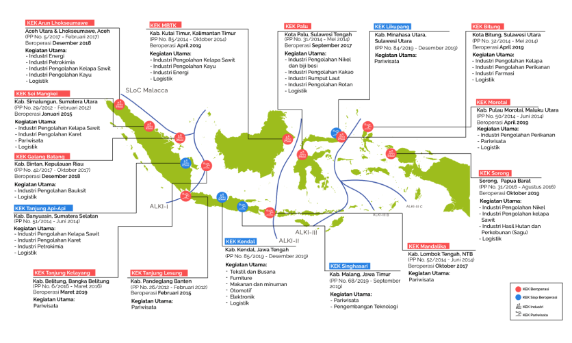

ABOUT
SINGHASARI SEZ

Singhasari SEZ the first digital SEZ in Indonesia, as decreed in the Government Regulation (GR) No. 68 Year 2019 and signed by the President of the Republic of Indonesia.
Special Economic Zone (SEZ) Singhasari is the designated SEZ
for Tourism and Digital Technology Development. The decree is particularly noteworthy given that Singhasari is the first SEZ to be granted a designation in Digital Technology Development. Singhasari SEZ is geographically situated in a
key strategic area for business and investment.
Peta Sebaran Kawasan Ekonomi Khusus (KEK)
